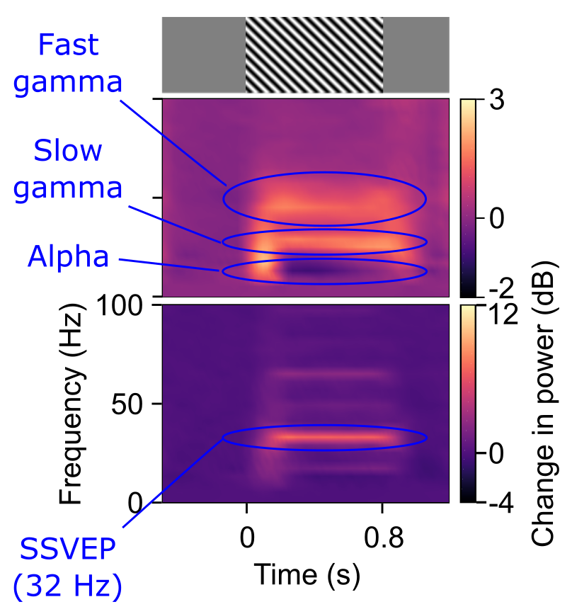
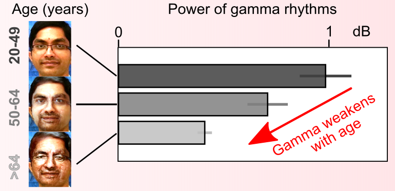
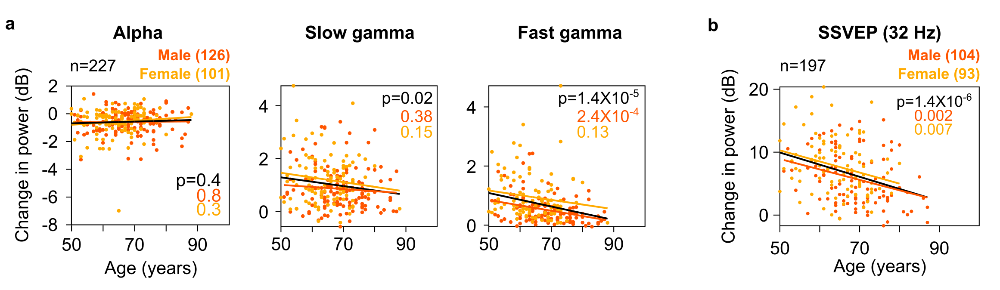

Real-time brain activity can be recorded in the form of electrical
signals. This is usually done in human subjects and patients by
placing electrodes over the scalp, a technique called
electro-encephalography (EEG). This technique is quite analogous to
ECG done for the heart. The signals thus obtained consist of various
oscillatory and non-oscillatory activity and can give clues about the
underlying brain states, structure and function.
My research with Dr. Supratim Ray, Indian Institute of Science, has
concentrated upon understanding such oscillatory activity, especially
activity in visual areas of the brain that has a frequency of 20-70
Hz.This activity is called visual gamma rhythm. This rhythm has been
suggested to be observed due to network activity in brain and is
correlated with various cognitive functions of the brain like
attention and working memory. I studied this rhythm in healthy
subjects as well as clinical populations.

In visual cortex, narrow-band gamma oscillation is generated by
specific visual images called Cartesian visual gratings. These are
alternating dark and white bars presented on a computer screen while a
subject stares at the screen (example seen in the figure to the
right). Gamma rhythms traditionally were observed in the range of
40-70 Hz in certain experiments in humans. However, no study
previously has observed multiple gamma rhythms in visual cortex of
humans, unlike in certain brain areas rodents. In my
first study, I had discovered a slower
visual gamma rhythm (~20-40 Hz) that was elicited only by larger
gratings (diameter more than 8° of visual angle). I had named these
rhythms as slow gamma (and the traditionally known gamma as fast
gamma). As mentioned above, slow gamma was observed only for larger
images and had longer latency unlike fast gamma, suggesting the role
of distinct networks in brain.
Figure legend: example time-frequency change in power spectrograms,
showing changes in alpha, slow gamma, fast gamma and SSVEP at 32 Hz,
with respect to the power before start of the stimulus (baseline).
An example stimulus (visual grating) is also shown and corresponds
to the start (0 s) and stop (0.8 s) of its presence on the screen.
For measuring gamma, we used stationary stimuli, and for measuring
32 Hz SSVEP, we used gratings that phase-reversed at 16 Hz.

Previous studies had reported correlation of gamma activity with
cognitive functions in healthy adults. However, how these oscillations
vary with healthy cognitive decline due to aging is not known. In my
second study, I found that both slow and
fast gamma decreased in power with age in 227 cognitively healthy
individuals aged 50-88 years. This age-related decrease was not due to
non-neural factors like small jittery eye-movements (microsaccades) or
noise during recording.
I had also looked at two other oscillations: alpha (8-12 Hz) and
steady-state visually evoked potentials (SSVEPs) at 32 Hz. Alpha
rhythms get stronger when a subject closes his eyes, and get weaker
when he engages in activity (viewing images on computer screen in my
case). I had noticed that these oscillations do not reduce with age in
elderly subjects unlike gamma rhythms. However, SSVEPs in gamma range
(32 Hz) do behave like gamma rhythms: these become weaker with age.
These rhtyhms are generated by similar images (gratings), however
these images "flicker on the screen" (technically, phase-reverse at 16
Hz) instead of remaining stationary.

Figure legend: Scatter plots and regression fits for change in
alpha/gamma/SSVEP power values due to stimulus relative to baseline
period across age for elderly subjects (male: dark orange; female:
light orange; both genders combined: black). p-Values for regression
is also mentioned.
Previous studies have found abnormalities in gamma rhythms in rodent
nodels of neurodegenrative disorders like Alzhiemer's disease. I would
hold on to the details of my clinical research till it appears on
medRxiv. For an interim conclusion of my work, discussed in light of
rodent studies, decline in gamma rhythm strength may be part of a
continuum of ‘healthy cognitive decline - pathological
neurodegenaration’ spectrum of aging process in humans.